); a CCD moves the charge packets pixel to pixel to one output amplifier with clocked MOS gates, a CMOS active-pixel sensor converts charge to voltage inside each pixel and reads rows through switches; performance is set by quantum efficiency, full-well capacity
); a CCD moves the charge packets pixel to pixel to one output amplifier with clocked MOS gates, a CMOS active-pixel sensor converts charge to voltage inside each pixel and reads rows through switches; performance is set by quantum efficiency, full-well capacity  (dynamic range
(dynamic range  ) and photon shot noise (
) and photon shot noise (CCD: charge transfer
Each pixel is a MOS capacitor biased into deep depletion: a potential well that collects electrons. In a three-phase CCD every pixel has three gates; raising the voltage of the next gate while lowering the current one moves the well — and its charge packet — one gate along (Boyle and Smith 1970). Rows shift into a serial register that shifts to a single charge amplifier. Charge transfer efficiency must be > 0.99999 per transfer (a 4000-column CCD makes ~12 000 transfers). Advantages: uniformity, very low noise, 100% fill factor; drawbacks: high clock voltages and power, slow serial readout, blooming and smear.
Picture: three-phase transfer
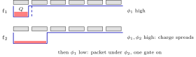
 one electrode along between
one electrode along between 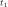
and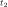
.CMOS active-pixel sensor
Each pixel holds a pinned photodiode and 3–4 transistors: reset, transfer gate (4T), source follower (in-pixel buffer) and row select; columns share amplifiers and ADCs. Correlated double sampling (read reset level, then signal, subtract) cancels kTC and offset noise: read noise ≈ 1–2 e⁻. Advantages: low power, on-chip logic and ADCs, random access, speed; drawbacks historically fill factor (transistors take area — solved by microlenses and back-side illumination) and rolling-shutter distortion of moving objects (global-shutter pixels store charge). CMOS now dominates phones, cars and most scientific cameras; CCDs survive in niche astronomy and spectroscopy (Fossum 1997).
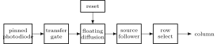
Figures of merit
QE (Si: up to 90% with BSI and AR coating, falls in the blue and beyond 900 nm, absorption); full-well capacity  (≈ 5000 e⁻ for 1 µm phone pixels,
(≈ 5000 e⁻ for 1 µm phone pixels,  for 10 µm pixels); read noise; dark current (doubles every ≈ 7 K: cooled sensors for astronomy); dynamic range
for 10 µm pixels); read noise; dark current (doubles every ≈ 7 K: cooled sensors for astronomy); dynamic range
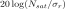
; colour by a Bayer mosaic (RGGB) and demosaicing. At high light the SNR is shot-noise limited,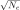
, maximum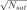
— larger pixels give cleaner images.Worked examples
- Signal: 3 µm pixel (
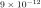
m²), irradiance 10 mW/m² at 550 nm: W →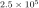
photons/s; QE 0.6, 10 ms exposure: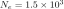
e⁻; SNR (31.7 dB); a 3 e⁻ read noise changes it to 38.6. - Dynamic range:
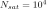
,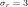
e⁻: DR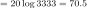
dB; best SNR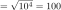
(40 dB). - Transfer efficiency: CTE 0.99999 over 12 000 transfers keeps
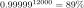
of the charge of the farthest pixel; 0.9999 would keep only 30%.
Engineering applications
Phone and automotive cameras (CMOS, HDR by multiple exposures), machine vision, astronomy (large cooled CCD and CMOS mosaics), X-ray flat-panel detectors (active-matrix TFT readout of photodiodes under a scintillator), time-of-flight depth sensors, SPAD arrays for LiDAR.
Exam-style exercise
A CMOS sensor has 1.4 µm pixels, QE 0.7 at 530 nm, full well 6000 e⁻, read noise 2 e⁻, dark current 5 e⁻/s. (a) Dynamic range. (b) Exposure that fills the well at 0.1 W/m². (c) SNR at 1% of full well, including read and dark noise for a 30 ms exposure.
Solution
(a)
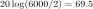
dB. (b) Pixel power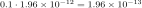
W →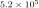
photons/s →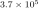
e⁻/s: full in 16 ms. (c)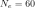
, dark 0.15 e⁻: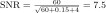
(17.5 dB); shot noise of the signal still dominates.Pitfall
Pixel SNR is not the "dynamic range": DR compares the largest and smallest signals in one exposure, SNR the signal to its own noise; at full well the SNR (≈ 40 dB) is far below the DR (≈ 70 dB).